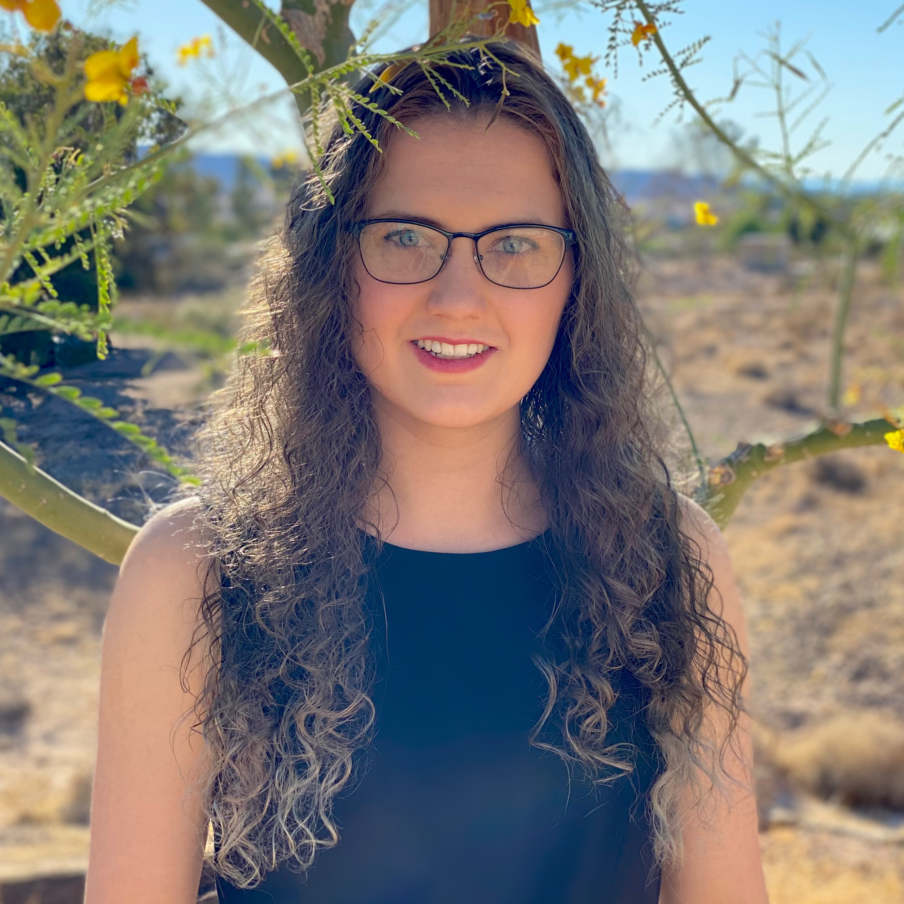

Sedona Thomas (she/her)

Education
- Columbia University, Fu Foundation School of Engineering and Applied Science, New York, NY
- Class of 2022, B.S. in Computer Science (Applications Track)
- Course of Study: 4-1 Program (pdf) (B.A. in Human Rights with a special concentration in Women and Gender Studies)
- GPA: 3.7570
- Completed Credits: 149.5
Work Experiences
- Inspirit AI Instructor (June 2021 - Present)
- Give lectures about AI/ML/NLP to high school students (experiences ranging from beginner to advanced)
- Prepare lecture materials and interactive demos for students
- Work directly with small groups of students to support hands-on learning for various applications of AI
- Teach students about the technical, social, and ethical challenges of AI/ML/NLP
- Moderate panels with students, parents, and other instructors
Skills
- Programming Skills:
- Python, Java, C, C++
- UNIX Systems, Shell Scripting, Bash, Zshell, Automation, Powershell
- User Interface/User Experience Design, Web Development/Design, HTML5/CSS, Flask, Javascript, JSON
- Artificial Intelligence, Machine Learning, Natural Language Processing
- Data Structures and Algorithms, Object Oriented Programming, Data Visualization, Software Testing/Debugging
- SQL, PostgreSQL, Database Management, Entity-Relationship Modeling
- Vim, Makefile, Git, TCP, Source Control
- Spyder, Conda, Pycharms
- LaTex, MIPS Assembly Language, MATLAB
- Computer Skills:
- MacOS, Windows 10, Linux
- Google Cloud Platform (GCP), Burp Suite, Ubuntu, WordPress, Hashcat, Sqlmap, Wolfram Mathmatica
- Graphic Design, CorelDRAW, SolidWorks
- Cybersecurity, Encryption
- Microsoft Office Suite, G-Suite
- Social Media Management/Engagement, Tech Support
- Math Skills: Number Theory, Cryptography, Discrete Math, Relational Algebra, Multivariable Calculus, Statistics, Linear Algebra
- Language Skills: English (native proficiency), French (professional working proficiency), Spanish (elementary proficiency)
- Background in women's studies and human rights
Courses
- Graduate Computer Science Courses:
- COMS 4170 User Interface Design
- COMS 4115 Programming Langauges and Translators
- COMS 4705 Natural Language Processing
- COMS 4701 Artificial Intelligence
- COMS 4111 Intro to Databases
- COMS 4995 C++ for C Programmers
- General Computer Science Courses:
- COMS 3157 Advanced Programming
- CSEE 3827 Fundamentals of Computer Systems
- COMS 3134 Data Structures in Java
- COMS 3261 Computer Science Theory
- COMS 3162 Developing Accessible User Interfaces
- COMS 3930 Creative Embedded Systems
- COMS 3420 Privacy in a Networked World
- COMS 3430 Computational Sound
- COMS 3107 Clean Object-Oriented Design
- Mathematics Courses:
- STAT 4001 Intro to Probability and Statistics
- COMS 3203 Discrete Mathematics
- MATH 3025 Making, Breaking Codes
- Liberal Arts Courses:
- AHIS 4652 Posing Modernity: The Black Model from Manet and Matisse to Today
- FREN 2121 Intermediate Conversational French I
- FREN 1205 Accelerated Intermediate French
- WMST 3131 Women and Science
- HRTS 3001 Intro to Human Rights
- WMST 1001 Intro to Women's Studies
Extracurricular Activities
- Columbia Women in Computer Science General Body Member (Links to External Site) (2019 - present)
- Columbia Society of Women Engineers General Body Member (Links to External Site) (2018 - present)
- AI@Columbia General Body Member (Links to External Site) (2021 - present)
- ADI General Body Member (Links to External Site) (2020 - present)
- Columbia iQ General Body Member (Links to External Site) (2018 - present)
- Columbia QuestBridge Scholar (Links to External Site) (2018 - present)
- Goju-Ryu Karate Club Board Member (Links to External Site) (2018-2019) (Secretary [2019], Treasurer [2019])
Volunteering
- Society of Women Engineers Mentorship Family (August 2020 - Present)
- Lead the SWE computer science mentorship family
- Advise five female computer science underclassmen
- Provide support as a fellow woman in computer science
- QuestBridge Peer Mentor (August 2020 - April 2021)
- Advise a first generation/low-income underclassman
- Provide assistance accessing Columbia University resources (especially financial aid)
- Engineering Student Council Peer Mentor (August 2020 - April 2021)
- Advise five computer science underclassmen
- Provide assistance accessing Columbia University resources
- NSOP R.O.A.R. @ Columbia panelist (2020 - 2021)
- Lead a panel of hundreds of first-year students
- Teach first-year student about drug and alcohol use, stress culture, and resources at Columbia
- More Information (Links to External Site)
- Columbia Health Peer Ambassador (2019)
- Educate Columbia students about available resources on campus
- Serve as a liaison between the student body and Columbia Health
- More Information (Links to External Site)
- NSOP Responsible Community @ Columbia facilitator (2019)
- Lead three discussions with twenty first-year students
- Teach first-year student about drug and alcohol use
- More Information (Links to External Site)
- NSOP Columbia Live Well | Learn Well facilitator (2019)
- Lead three discussions with twenty first-year students
- Teach first-year student about stress culture and resources at Columbia
- More Information (Links to External Site)
- Girl Scout Member/Volunteer (2005 - present)
- QuestBridge Finalist Mentor (2018)
- Advised to low-income students applying to college
- Provided feedback on essays and answered questions
Projects
- C/C++ Projects:
- Program Compiler Automation Tool (May 2021 - June 2021)
- Implements a Makefile substitute with extended capabilities
- Written in C++
- Custom Database (May 2021 - June 2021)
- Implements a generic database with separate reading and writing capabilities
- Written in C++
- MyString Class (May 2021 - June 2021)
- Implements a string class with various constructors and operators for customizable use
- Written in C++
- Web Server from Scratch (August 2020 - December 2020)
- Built a web server from scratch through a series of assignments throughout the semester
- Written in C
- Project Description (Links to External Site)
- Web Page Downloader (August 2020 - December 2020)
- Downloads a file from a specified webpage
- Written in C
- Message Database Remote Server (August 2020 - December 2020)
- Implements a message database and searches for specified messages over a remote server
- Uses Sockets API
- Written in C
- Message Database Manual Server (August 2020 - December 2020)
- Implements a message database and searches for specified messages over a remote server
- Uses Netcat
- Written in C
- Message Database (August 2020 - December 2020)
- Implements a message database and searches for specified messages
- Written in C
- Singly Linked List Library (August 2020 - December 2020)
- Implements a singly linked list struct library with various methods
- Written in C
- Python Projects:
- Natural Language Processing Image Captioning (May 2021 - June 2021)
- Implements an image captioning neural network using the flickr8k dataset
- Implements a greedy image decoder and beam search image decoder using a conditioned recursive neural network generator
- Implemented using a Keras model
- Natural Language Processing Lexical Substitution (May 2021 - June 2021)
- Implements methods to predict context specific synonyms for a given work in input sentences
- Methods use WordNet, lesk algorithm, pre-trained Word2Vec embeddings, and BERT
- Natural Language Processing Dependency Parsing Neural Network (May 2021 - June 2021)
- Implements a neural network to predict the most likely dependency tree for an input sentence
- Implemented using a Keras model
- Natural Language Processing Parsing Context Free Grammars (May 2021 - June 2021)
- Creates probabilistic context free grammars for input sentences
- Retrieves parse trees for input sentences
- Natural Language Processing Essay Classification (May 2021 - June 2021)
- Scores essays written by non-native speakers of English for the ETS TOEFL test
- Implements an n-gram language model
- Implements a text generator
- Python Database (January 2021 - April 2021)
- Searches a database of python documentation using keywords and syntax search
- Allows users to add themselves as contributors and save personal code
- Allows users to save notes, share them with other users, and search via keywords or full-text search
- Allows users to save favorite methods, constants, and modules
- More Information: Project Description (Links to External Site)
- Worked with Jessica Kuleshov Jessica Kuleshov LinkedIn (Links to External Site)
- Source Code (Links to External Site)
- Artificial Intelligence 2048 Solver (January 2021 - April 2021)
- Implements adversarial search (expectiminimax with alpha beta pruning)
- High Score: 8192, Median Score: 4096
- Artificial Intelligence Sudoku Solver (January 2021 - April 2021)
- Implements constraint stratification
- Artificial Intelligence N-Puzzle Solver (January 2021 - April 2021)
- Implements both uninformed and informed search algorithms (Breadth-First Search, Depth-First Search, and A-Star Search)
- NYC Virus Simulator (August 2019 - December 2019)
- Simulates the spread of a virus through New York City for a given virality and recovery time
- Uses Matplotlib
- Wine Classification (August 2019 - December 2019)
- Uses a machine learning model to predict red and white wine from given data sets (Links to External Site)
- Applies the Nearest Centroid Classifier and cross-validation
- Farmers' Market Database (August 2019 - December 2019)
- Searches given dataset (Links to External Site) of US farmers markets for a specific zip code or town
- Image Encoder/Decoder (August 2019 - December 2019)
- Encrypts/decrypts an image file using a given encryption key
- Uses NumPy and Matplotlib
- Blackjack Game (August 2019 - December 2019)
- Plays a standard game of blackjack
- Generic Discrete Mathematics Methods (January 2020 - May 2020)
- Plots graphs and checks for various properties (including if isomorphic, Euclidian, etc.)
- Simulates and graphs various probability scenarios (including coin flipping)
- Formats and calculates propositional logic
- Includes various generic sorting algorithms
- Uses Networkx, Matplotlib, and NumPy
- Java Projects:
- Nim Game (January 2020 - May 2020)
- Plays a game of Nim
- Poker Game (January 2020 - May 2020)
- Plays a standard game of poker
- Generic Methods (January 2020 - May 2020)
- Implements generic linear and binary search methods (applicable to comparable classes)
- Generic Stack (January 2020 - May 2020)
- Implements a generic stack class
- Generic Queue (January 2020 - May 2020)
- Implements a generic queue using two stacks
- Dijkstra's Algorithm (January 2020 - May 2020)
- Implements Dijkstra's algorithm and plots the result
- HTML/CSS/Javascript Projects:
- Automated Composition Visualization (August 2021 - December 2021)
- Uses NLP to perform automated composition on a text
- Creates a unique visualization of the text
- Github Repo (Links to External Site)
- Automated Composition with Markov Chains (August 2021 - December 2021)
- Uses Markov chains to compose a song from another song
- Either accepts a sequence of user inputted notes or uses Twinkle Twinkle Little Star
- Github Repo (Links to External Site)
- Digital Synthesizer Webpage (August 2021 - December 2021)
- Allows the user to play a song on their computer keyboard
- Has modes to perform additive synthesis, amplitude modulation, frequency modulation and to control their parameters
- Can add a low frequency oscillator to the keyboard and control its frequency
- Github Repo (Links to External Site)
- Digital Keyboard Webpage (August 2021 - December 2021)
- Allows the user to play a song on their computer keyboard
- Highlights an image of a keyboard to show the user what note they are playing
- Github Repo (Links to External Site)
- Arduino Projects:
- ESP32 TTGO T-Display Text Visualization (January 2022 - May 2022)
- Scrolls through the UDHR in English and French
- Medium Article (Links to External Site)
- Github Repo (Links to External Site)
Honors/Awards
- Columbia University Dean's List (Spring 2021)
- The President's Volunteer Service Award (2018)
- Recognized for Pirate Prevention, a Girl Scout Gold Award Community Safety Project to allow first responders access to medical information in an emergency
- Nevada Governor's Volunteer Recognition Award (2017)
- Recognized for Pirate Prevention, a Girl Scout Gold Award Community Safety Project to allow first responders access to medical information in an emergency
Certifications
- Human Subjects Protection SBR (Issued Mar 2022 - Expires Mar 2025)
- Training by the CITI Program
- Credential ID: 47837978
- Certificate
- Opioid Overdose Prevention/Naloxone Nasal Spray Training (Issued Sep 2019 - No Expiration Date)
- Overdose prevention training by the New York State Department of Health
- Codepath Cybersecurity Course (Honors) (January 2021 - May 2021)
- Learned about the fundamentals of web application security (both offensive and defensive skills)
- Topics included Insecure Direct Object Reference (IDOR), Cross-Site Request Forgery (CSRF), Cross-Site Scripting (XSS), SQL Injection (SQLI), Encryption, User Authentication, Social Engineering, Phishing, Privilege Escalation, and more
- Worked with Kali Linux, hashcat, WordPress, Vagrant, netsec, Metasploit, and Honeynet
- Certificate PDF (Links to External Page)
- Syllabus (Links to External Site)
- Girl Scout Gold Award (Issued Dec 2016 - No Expiration Date)
- Girl Scouts of the USA Gold Award service project with over 300 hours of volunteer work
- Documentation (Links to External Site)